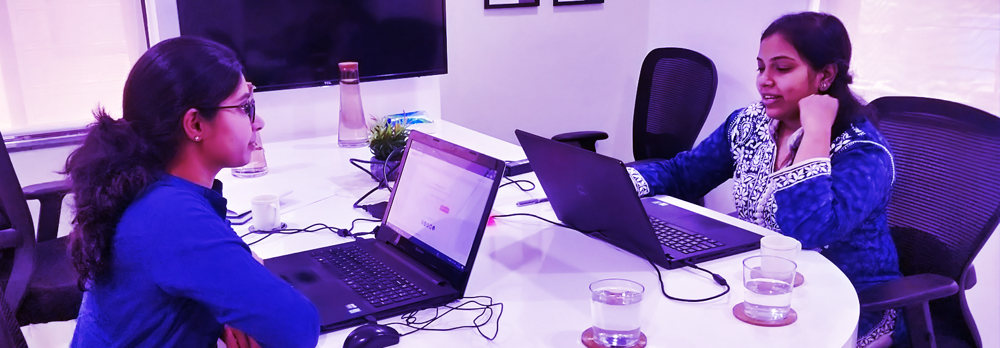

Readers’ Perceptions of Desktop Wikipedia
Understanding the experience of new and casual readers; how they feel about the site and how they use the site.
Overview
The goal of the study is to understand the experience of new and casual readers, both in terms of how they perceive and how they use the Wikipedia desktop site. In the first phase, we establish a baseline for welcomeness and readability, trust and credibility, as well as the usability of commonly used features on the site. In the second phase of the research, we study users who do not use English as their primary language online. Users are also asked to compare the current site to a prototype that contains a language switching feature and to describe their impressions. Both phases were conducted in India by our research partner, Hureo, using contextual inquiries and interviews.